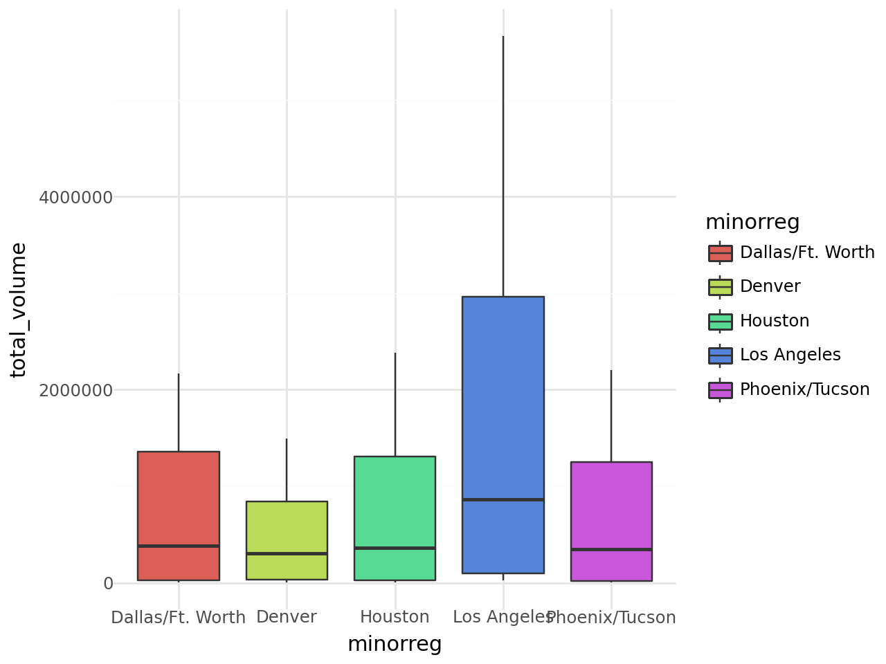
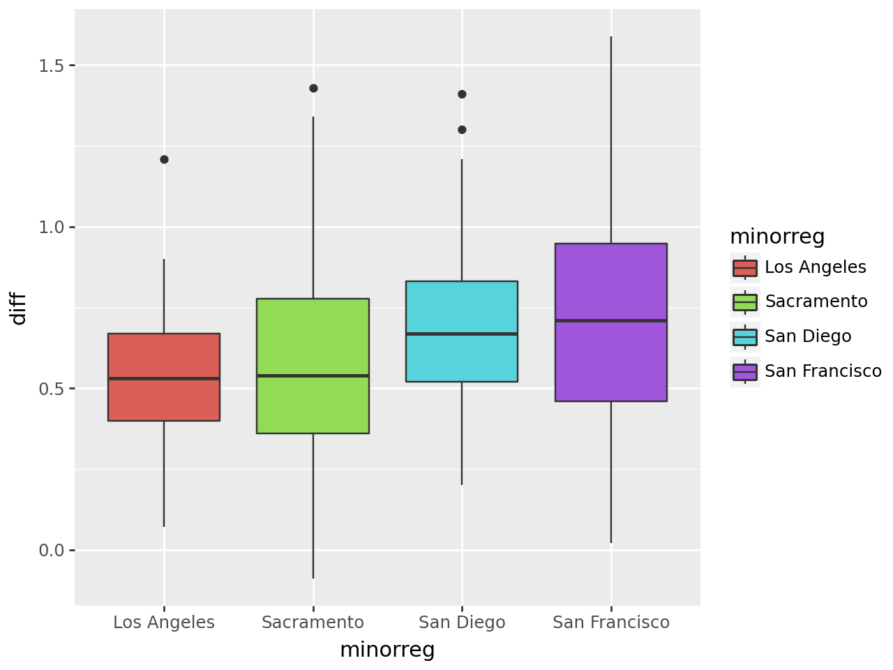
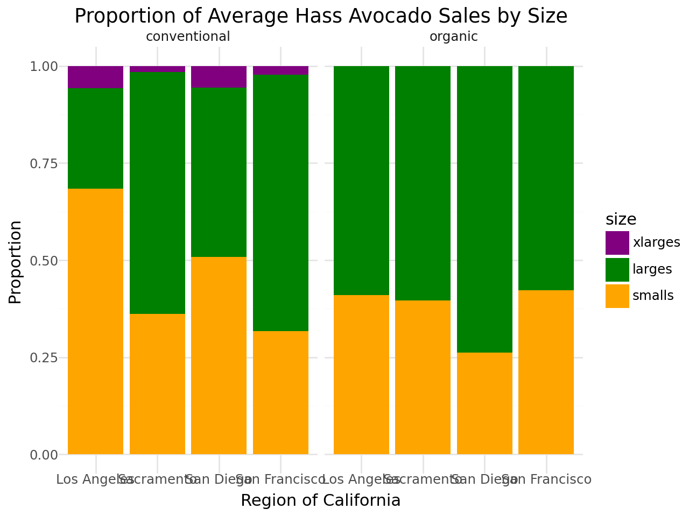
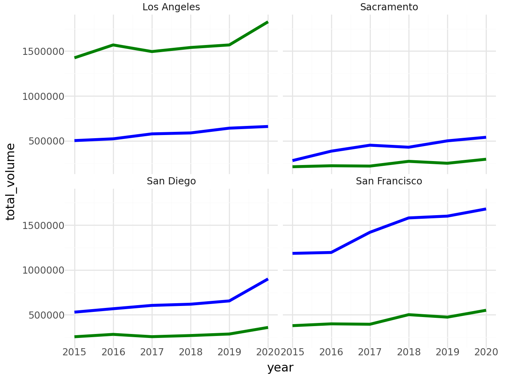

import numpy as np
import pandas as pd
from plotnine import *Lab 2: Avocado Prices
Data set up
avocado = pd.read_csv("/content/avocado.csv")
avocado.head()| date | average_price | total_volume | 4046 | 4225 | 4770 | total_bags | small_bags | large_bags | xlarge_bags | type | year | geography | |
|---|---|---|---|---|---|---|---|---|---|---|---|---|---|
| 0 | 2015-01-04 | 1.22 | 40873.28 | 2819.50 | 28287.42 | 49.90 | 9716.46 | 9186.93 | 529.53 | 0.0 | conventional | 2015 | Albany |
| 1 | 2015-01-04 | 1.79 | 1373.95 | 57.42 | 153.88 | 0.00 | 1162.65 | 1162.65 | 0.00 | 0.0 | organic | 2015 | Albany |
| 2 | 2015-01-04 | 1.00 | 435021.49 | 364302.39 | 23821.16 | 82.15 | 46815.79 | 16707.15 | 30108.64 | 0.0 | conventional | 2015 | Atlanta |
| 3 | 2015-01-04 | 1.76 | 3846.69 | 1500.15 | 938.35 | 0.00 | 1408.19 | 1071.35 | 336.84 | 0.0 | organic | 2015 | Atlanta |
| 4 | 2015-01-04 | 1.08 | 788025.06 | 53987.31 | 552906.04 | 39995.03 | 141136.68 | 137146.07 | 3990.61 | 0.0 | conventional | 2015 | Baltimore/Washington |
The data for avocados talks about the sales about per bag and size of individual avocados. It is seperated out into small, large, and x-large avocados. It also shows what the prices is per year and region as well as what type of avocado is sold.
avocado_clean = avocado.dropna(axis=0)
avocado_clean.head()| date | average_price | total_volume | 4046 | 4225 | 4770 | total_bags | small_bags | large_bags | xlarge_bags | type | year | geography | |
|---|---|---|---|---|---|---|---|---|---|---|---|---|---|
| 0 | 2015-01-04 | 1.22 | 40873.28 | 2819.50 | 28287.42 | 49.90 | 9716.46 | 9186.93 | 529.53 | 0.0 | conventional | 2015 | Albany |
| 1 | 2015-01-04 | 1.79 | 1373.95 | 57.42 | 153.88 | 0.00 | 1162.65 | 1162.65 | 0.00 | 0.0 | organic | 2015 | Albany |
| 2 | 2015-01-04 | 1.00 | 435021.49 | 364302.39 | 23821.16 | 82.15 | 46815.79 | 16707.15 | 30108.64 | 0.0 | conventional | 2015 | Atlanta |
| 3 | 2015-01-04 | 1.76 | 3846.69 | 1500.15 | 938.35 | 0.00 | 1408.19 | 1071.35 | 336.84 | 0.0 | organic | 2015 | Atlanta |
| 4 | 2015-01-04 | 1.08 | 788025.06 | 53987.31 | 552906.04 | 39995.03 | 141136.68 | 137146.07 | 3990.61 | 0.0 | conventional | 2015 | Baltimore/Washington |
avocado_clean = avocado_clean.rename(columns={"4046": "smalls", "4225": "larges", "4770" : "xlarges"})
avocado_clean.head()| date | average_price | total_volume | smalls | larges | xlarges | total_bags | small_bags | large_bags | xlarge_bags | type | year | geography | |
|---|---|---|---|---|---|---|---|---|---|---|---|---|---|
| 0 | 2015-01-04 | 1.22 | 40873.28 | 2819.50 | 28287.42 | 49.90 | 9716.46 | 9186.93 | 529.53 | 0.0 | conventional | 2015 | Albany |
| 1 | 2015-01-04 | 1.79 | 1373.95 | 57.42 | 153.88 | 0.00 | 1162.65 | 1162.65 | 0.00 | 0.0 | organic | 2015 | Albany |
| 2 | 2015-01-04 | 1.00 | 435021.49 | 364302.39 | 23821.16 | 82.15 | 46815.79 | 16707.15 | 30108.64 | 0.0 | conventional | 2015 | Atlanta |
| 3 | 2015-01-04 | 1.76 | 3846.69 | 1500.15 | 938.35 | 0.00 | 1408.19 | 1071.35 | 336.84 | 0.0 | organic | 2015 | Atlanta |
| 4 | 2015-01-04 | 1.08 | 788025.06 | 53987.31 | 552906.04 | 39995.03 | 141136.68 | 137146.07 | 3990.61 | 0.0 | conventional | 2015 | Baltimore/Washington |
avocado_clean['geography'].unique()array(['Albany', 'Atlanta', 'Baltimore/Washington', 'Boise', 'Boston',
'Buffalo/Rochester', 'California', 'Charlotte', 'Chicago',
'Cincinnati/Dayton', 'Columbus', 'Dallas/Ft. Worth', 'Denver',
'Detroit', 'Grand Rapids', 'Great Lakes', 'Harrisburg/Scranton',
'Hartford/Springfield', 'Houston', 'Indianapolis', 'Jacksonville',
'Las Vegas', 'Los Angeles', 'Louisville', 'Miami/Ft. Lauderdale',
'Midsouth', 'Nashville', 'New Orleans/Mobile', 'New York',
'Northeast', 'Northern New England', 'Orlando', 'Philadelphia',
'Phoenix/Tucson', 'Pittsburgh', 'Plains', 'Portland',
'Raleigh/Greensboro', 'Richmond/Norfolk', 'Roanoke', 'Sacramento',
'San Diego', 'San Francisco', 'Seattle', 'South Carolina',
'South Central', 'Southeast', 'Spokane', 'St. Louis', 'Syracuse',
'Tampa', 'Total U.S.', 'West', 'West Tex/New Mexico'], dtype=object)avocado_clean["majorreg"] = avocado_clean["geography"].map({
'West Tex/New Mexico': 'West Tex/New Mexico',
'West': 'West',
'Southeast': 'Southeast',
'Plains' : 'Plains',
'Midsouth': 'Midsouth',
'Northeast': 'Northeast',
'South Central': 'South Central',
'Northern New England' : 'Northern New England',
'New York' : 'New York',
'California' : 'California',
'Great Lakes' : 'Great Lakes',
'Midsouth' : 'Midsouth',
'South Atlantic' : 'South Atlantic',
'South' : 'South',
})
avocado_clean["minorreg"] = avocado_clean["geography"].map({
'Albany' : 'Albany',
'Atlanta' : 'Atlanta',
'Baltimore/Washington' : 'Baltimore/Washington',
'Boise' : 'Boise',
'Boston' : 'Boston',
'Buffalo/Rochester' : 'Buffalo/Rochester',
'Charlotte' : 'Charlotte',
'Chicago' : 'Chicago',
'Cincinnati/Dayton' : 'Cincinnati/Dayton',
'Columbus' : 'Columbus',
'Dallas/Ft. Worth' : 'Dallas/Ft. Worth',
'Denver' : 'Denver',
'Detroit' : 'Detroit',
'Grand Rapids': 'Grand Rapids',
'Harrisburg/Scranton' : 'Harrisburg/Scranton',
'Hartford/Springfield' : 'Hartford/Springfield',
'Houston' : 'Houston',
'Indianapolis' : 'Indianapolis',
'Jacksonville' : 'Jacksonville',
'Las Vegas' : 'Las Vegas',
'Los Angeles' : 'Los Angeles',
'Louisville' : 'Louisville',
'Miami/Ft. Lauderdale' : 'Miami/Ft. Lauderdale',
'Nashville' : 'Nashville',
'New Orleans/Mobile' : 'New Orleans/Mobile',
'Orlando' :'Orlando',
'Philadelphia' : 'Philadelphia',
'Phoenix/Tucson' : 'Phoenix/Tucson',
'Pittsburgh' : 'Pittsburgh',
'Portland' : 'Portland',
'Raleigh/Greensboro' : 'Raleigh/Greensboro',
'Richmond/Norfolk' : 'Richmond/Norfolk',
'Roanoke' : 'Roanoke',
'Sacramento' : 'Sacramento',
'San Diego' : 'San Diego',
'San Francisco' : 'San Francisco',
'Seattle' : 'Seattle',
'South Carolina' : 'South Carolina',
'Spokane' :'Spokane',
'St. Louis' : 'St. Louis',
'Syracuse': 'Syracuse',
'Tampa' : 'Tampa',
})
avocado_clean.head()| date | average_price | total_volume | smalls | larges | xlarges | total_bags | small_bags | large_bags | xlarge_bags | type | year | geography | majorreg | minorreg | |
|---|---|---|---|---|---|---|---|---|---|---|---|---|---|---|---|
| 0 | 2015-01-04 | 1.22 | 40873.28 | 2819.50 | 28287.42 | 49.90 | 9716.46 | 9186.93 | 529.53 | 0.0 | conventional | 2015 | Albany | NaN | Albany |
| 1 | 2015-01-04 | 1.79 | 1373.95 | 57.42 | 153.88 | 0.00 | 1162.65 | 1162.65 | 0.00 | 0.0 | organic | 2015 | Albany | NaN | Albany |
| 2 | 2015-01-04 | 1.00 | 435021.49 | 364302.39 | 23821.16 | 82.15 | 46815.79 | 16707.15 | 30108.64 | 0.0 | conventional | 2015 | Atlanta | NaN | Atlanta |
| 3 | 2015-01-04 | 1.76 | 3846.69 | 1500.15 | 938.35 | 0.00 | 1408.19 | 1071.35 | 336.84 | 0.0 | organic | 2015 | Atlanta | NaN | Atlanta |
| 4 | 2015-01-04 | 1.08 | 788025.06 | 53987.31 | 552906.04 | 39995.03 | 141136.68 | 137146.07 | 3990.61 | 0.0 | conventional | 2015 | Baltimore/Washington | NaN | Baltimore/Washington |
question 3
avo2017= avocado_clean[(avocado_clean["year"] == 2017) & (avocado_clean["type"] == "organic")]
result =avo2017.groupby("majorreg")[["smalls"]].sum()
result1 = result.sort_values(by="smalls", ascending=False)
result1.head(1)| smalls | |
|---|---|
| majorreg | |
| West | 1870206.29 |
west has the greatest amount of sales for small avocados per region at 1,870,206 sales
question 4
avocado_clean['date'] = pd.to_datetime(avocado_clean['date'])
avocado_clean['Year'] = avocado_clean['date'].dt.year
avocado_clean['Month'] = avocado_clean['date'].dt.month
avocado_clean['Day'] = avocado_clean['date'].dt.day
avocado_clean.head()| date | average_price | total_volume | smalls | larges | xlarges | total_bags | small_bags | large_bags | xlarge_bags | type | year | geography | majorreg | minorreg | Year | Month | Day | month | |
|---|---|---|---|---|---|---|---|---|---|---|---|---|---|---|---|---|---|---|---|
| 0 | 2015-01-04 | 1.22 | 40873.28 | 2819.50 | 28287.42 | 49.90 | 9716.46 | 9186.93 | 529.53 | 0.0 | conventional | 2015 | Albany | NaN | Albany | 2015 | 1 | 4 | january |
| 1 | 2015-01-04 | 1.79 | 1373.95 | 57.42 | 153.88 | 0.00 | 1162.65 | 1162.65 | 0.00 | 0.0 | organic | 2015 | Albany | NaN | Albany | 2015 | 1 | 4 | january |
| 2 | 2015-01-04 | 1.00 | 435021.49 | 364302.39 | 23821.16 | 82.15 | 46815.79 | 16707.15 | 30108.64 | 0.0 | conventional | 2015 | Atlanta | NaN | Atlanta | 2015 | 1 | 4 | january |
| 3 | 2015-01-04 | 1.76 | 3846.69 | 1500.15 | 938.35 | 0.00 | 1408.19 | 1071.35 | 336.84 | 0.0 | organic | 2015 | Atlanta | NaN | Atlanta | 2015 | 1 | 4 | january |
| 4 | 2015-01-04 | 1.08 | 788025.06 | 53987.31 | 552906.04 | 39995.03 | 141136.68 | 137146.07 | 3990.61 | 0.0 | conventional | 2015 | Baltimore/Washington | NaN | Baltimore/Washington | 2015 | 1 | 4 | january |
avocado_clean["month"] = avocado_clean["Month"].map({
1: 'january',
2: 'febuary',
3: 'march',
4 : 'april',
5: 'may',
6: 'june',
7: 'july',
8 : 'august',
9 : 'september',
10 : 'october',
11 : 'november',
12 : 'december',
})
result =avocado_clean.groupby("month")[["total_volume"]].sum()
result1 = result.sort_values(by="total_volume", ascending=False)
result1.head(1)| total_volume | |
|---|---|
| month | |
| may | 3.276512e+09 |
May has the greatest amount of total volume out of all months
question 5
result =avocado_clean.groupby("minorreg")[["total_volume"]].sum()
result1 = result.sort_values(by="total_volume", ascending=False)
result1 = result1.idxmax()
print(result1)total_volume Los Angeles
dtype: objectLos angles has the highest avocado sales in the metro regions
topmetro = result1.head(5).index.tolist()
topmetro['total_volume']avofil= avocado_clean[(avocado_clean["minorreg"] == 'Los Angeles') | (avocado_clean["minorreg"] == 'Dallas/Ft. Worth') | (avocado_clean["minorreg"] == 'Houston') | (avocado_clean["minorreg"] == 'Phoenix/Tucson') | (avocado_clean["minorreg"] == 'Denver')]
avofil.head()| date | average_price | total_volume | smalls | larges | xlarges | total_bags | small_bags | large_bags | xlarge_bags | type | year | geography | majorreg | minorreg | Year | Month | Day | month | |
|---|---|---|---|---|---|---|---|---|---|---|---|---|---|---|---|---|---|---|---|
| 22 | 2015-01-04 | 0.74 | 1086363.97 | 612795.80 | 374420.68 | 9817.28 | 89330.21 | 54563.33 | 34760.08 | 6.80 | conventional | 2015 | Dallas/Ft. Worth | NaN | Dallas/Ft. Worth | 2015 | 1 | 4 | january |
| 23 | 2015-01-04 | 1.35 | 9895.96 | 4634.70 | 1647.92 | 0.00 | 3613.34 | 3613.34 | 0.00 | 0.00 | organic | 2015 | Dallas/Ft. Worth | NaN | Dallas/Ft. Worth | 2015 | 1 | 4 | january |
| 24 | 2015-01-04 | 0.99 | 668086.00 | 117454.09 | 429518.41 | 5553.60 | 115559.90 | 67894.33 | 47661.52 | 4.05 | conventional | 2015 | Denver | NaN | Denver | 2015 | 1 | 4 | january |
| 25 | 2015-01-04 | 1.42 | 22480.07 | 3199.35 | 6916.72 | 7.56 | 12356.44 | 1076.67 | 11279.77 | 0.00 | organic | 2015 | Denver | NaN | Denver | 2015 | 1 | 4 | january |
| 36 | 2015-01-04 | 0.71 | 1062990.62 | 506426.58 | 436347.57 | 4378.92 | 115837.55 | 90299.85 | 25537.70 | 0.00 | conventional | 2015 | Houston | NaN | Houston | 2015 | 1 | 4 | january |
(ggplot(avofil, aes(x = "minorreg", y = "total_volume", fill = "minorreg"))
+ geom_boxplot()
+theme_minimal()
)
question 6
avocal= avocado_clean[(avocado_clean["minorreg"] == 'Los Angeles') | (avocado_clean["minorreg"] == 'San Diego') | (avocado_clean["minorreg"] == 'Sacramento') |
(avocado_clean["minorreg"] == 'San Francisco')]
avocal.head()| date | average_price | total_volume | smalls | larges | xlarges | total_bags | small_bags | large_bags | xlarge_bags | type | year | geography | majorreg | minorreg | Year | Month | Day | month | |
|---|---|---|---|---|---|---|---|---|---|---|---|---|---|---|---|---|---|---|---|
| 44 | 2015-01-04 | 0.85 | 2682159.95 | 1837999.65 | 524430.47 | 64225.78 | 255504.05 | 215571.80 | 36981.72 | 2950.53 | conventional | 2015 | Los Angeles | NaN | Los Angeles | 2015 | 1 | 4 | january |
| 45 | 2015-01-04 | 1.25 | 54495.54 | 47721.51 | 1723.40 | 0.00 | 5050.63 | 5050.63 | 0.00 | 0.00 | organic | 2015 | Los Angeles | NaN | Los Angeles | 2015 | 1 | 4 | january |
| 80 | 2015-01-04 | 1.05 | 430138.88 | 110693.69 | 270107.61 | 9737.50 | 39600.08 | 39600.08 | 0.00 | 0.00 | conventional | 2015 | Sacramento | NaN | Sacramento | 2015 | 1 | 4 | january |
| 81 | 2015-01-04 | 1.33 | 9213.49 | 3727.52 | 4327.52 | 0.00 | 1158.45 | 1158.45 | 0.00 | 0.00 | organic | 2015 | Sacramento | NaN | Sacramento | 2015 | 1 | 4 | january |
| 82 | 2015-01-04 | 0.94 | 461607.33 | 244152.26 | 165299.33 | 15302.75 | 36852.99 | 30884.29 | 5595.00 | 373.70 | conventional | 2015 | San Diego | NaN | San Diego | 2015 | 1 | 4 | january |
question 7
avopivot = avocal.pivot(index = ["minorreg", 'date'], columns = "type", values = "average_price")
avopivot = avopivot.reset_index()
avopivot.head()| type | minorreg | date | conventional | organic |
|---|---|---|---|---|
| 0 | Los Angeles | 2015-01-04 | 0.85 | 1.25 |
| 1 | Los Angeles | 2015-01-11 | 0.85 | 1.08 |
| 2 | Los Angeles | 2015-01-18 | 0.89 | 1.29 |
| 3 | Los Angeles | 2015-01-25 | 0.96 | 1.23 |
| 4 | Los Angeles | 2015-02-01 | 0.74 | 1.12 |
avopivot["diff"] = (avopivot["organic"] - avopivot["conventional"])
avopivot.head()| type | minorreg | date | conventional | organic | diff |
|---|---|---|---|---|---|
| 0 | Los Angeles | 2015-01-04 | 0.85 | 1.25 | 0.40 |
| 1 | Los Angeles | 2015-01-11 | 0.85 | 1.08 | 0.23 |
| 2 | Los Angeles | 2015-01-18 | 0.89 | 1.29 | 0.40 |
| 3 | Los Angeles | 2015-01-25 | 0.96 | 1.23 | 0.27 |
| 4 | Los Angeles | 2015-02-01 | 0.74 | 1.12 | 0.38 |
avopivot.groupby("minorreg")[["diff"]].describe()| type | diff | |||||||
|---|---|---|---|---|---|---|---|---|
| count | mean | std | min | 25% | 50% | 75% | max | |
| minorreg | ||||||||
| Los Angeles | 306.0 | 0.527778 | 0.188143 | 0.07 | 0.40 | 0.53 | 0.6700 | 1.21 |
| Sacramento | 306.0 | 0.578497 | 0.270029 | -0.09 | 0.36 | 0.54 | 0.7775 | 1.43 |
| San Diego | 306.0 | 0.684510 | 0.211286 | 0.20 | 0.52 | 0.67 | 0.8300 | 1.41 |
| San Francisco | 306.0 | 0.718954 | 0.333801 | 0.02 | 0.46 | 0.71 | 0.9475 | 1.59 |
the city with the highest difference is San Francisco at 1.59
(ggplot(avopivot, aes(x = "minorreg", y = "diff", fill = "minorreg"))
+ geom_boxplot()
)
Question 8
avomelt = avocal.melt(id_vars=["minorreg", 'type', 'total_volume', 'year'], value_vars =["smalls", "larges", "xlarges"], var_name="size", value_name="sales")
avomelt.head()| minorreg | type | total_volume | year | size | sales | |
|---|---|---|---|---|---|---|
| 0 | Los Angeles | conventional | 2682159.95 | 2015 | smalls | 1837999.65 |
| 1 | Los Angeles | organic | 54495.54 | 2015 | smalls | 47721.51 |
| 2 | Sacramento | conventional | 430138.88 | 2015 | smalls | 110693.69 |
| 3 | Sacramento | organic | 9213.49 | 2015 | smalls | 3727.52 |
| 4 | San Diego | conventional | 461607.33 | 2015 | smalls | 244152.26 |
avomelt['size']= pd.Categorical(avomelt['size'], categories=["xlarges", "larges", "smalls"], ordered=True)
avosale= (avomelt.groupby(["minorreg", "size", 'type'], as_index= False).agg(average_sales=("sales", "mean")))
avosale.head()FutureWarning: The default of observed=False is deprecated and will be changed to True in a future version of pandas. Pass observed=False to retain current behavior or observed=True to adopt the future default and silence this warning.| minorreg | size | type | average_sales | |
|---|---|---|---|---|
| 0 | Los Angeles | xlarges | conventional | 9.707364e+04 |
| 1 | Los Angeles | xlarges | organic | 6.035294e+00 |
| 2 | Los Angeles | larges | conventional | 4.438423e+05 |
| 3 | Los Angeles | larges | organic | 2.080422e+04 |
| 4 | Los Angeles | smalls | conventional | 1.172952e+06 |
(ggplot(avosale, aes(x = "minorreg", y = "average_sales", fill = "size"))
+ geom_bar(stat="identity", position = "fill")
+ theme_minimal()
+ labs(x="Region of California", y="Proportion", title = "Proportion of Average Hass Avocado Sales by Size")
+scale_fill_manual(values = ["purple", "green", "orange"])
+ facet_wrap("~type")
)
Question 9
houseprices = pd.read_excel("/content/houseprices1.xlsx")
houseprices.head()| minorreg | year | avgprice | |
|---|---|---|---|
| 0 | Los Angeles | 2015 | 502750 |
| 1 | Los Angeles | 2016 | 522520 |
| 2 | Los Angeles | 2017 | 577690 |
| 3 | Los Angeles | 2018 | 588140 |
| 4 | Los Angeles | 2019 | 641340 |
avoouter = avocal.merge(houseprices, on=["minorreg", "year"], how="outer")
avoouter.head()| date | average_price | total_volume | smalls | larges | xlarges | total_bags | small_bags | large_bags | xlarge_bags | type | year | geography | majorreg | minorreg | Year | Month | Day | month | avgprice | |
|---|---|---|---|---|---|---|---|---|---|---|---|---|---|---|---|---|---|---|---|---|
| 0 | 2015-01-04 | 0.85 | 2682159.95 | 1837999.65 | 524430.47 | 64225.78 | 255504.05 | 215571.80 | 36981.72 | 2950.53 | conventional | 2015 | Los Angeles | NaN | Los Angeles | 2015 | 1 | 4 | january | 502750 |
| 1 | 2015-01-04 | 1.25 | 54495.54 | 47721.51 | 1723.40 | 0.00 | 5050.63 | 5050.63 | 0.00 | 0.00 | organic | 2015 | Los Angeles | NaN | Los Angeles | 2015 | 1 | 4 | january | 502750 |
| 2 | 2015-01-11 | 0.85 | 2713699.60 | 1786326.65 | 617233.39 | 58892.91 | 251246.65 | 222971.68 | 25111.74 | 3163.23 | conventional | 2015 | Los Angeles | NaN | Los Angeles | 2015 | 1 | 11 | january | 502750 |
| 3 | 2015-01-11 | 1.08 | 60232.63 | 52087.31 | 2063.44 | 0.00 | 6081.88 | 6081.88 | 0.00 | 0.00 | organic | 2015 | Los Angeles | NaN | Los Angeles | 2015 | 1 | 11 | january | 502750 |
| 4 | 2015-01-18 | 0.89 | 2800679.50 | 1925013.31 | 526106.80 | 59364.23 | 290195.16 | 260857.96 | 26671.18 | 2666.02 | conventional | 2015 | Los Angeles | NaN | Los Angeles | 2015 | 1 | 18 | january | 502750 |
avohouse = avoouter.groupby(["minorreg","year"])[["avgprice", "total_volume"]].mean()
avohouse| avgprice | total_volume | ||
|---|---|---|---|
| minorreg | year | ||
| Los Angeles | 2015 | 502750.0 | 1.425199e+06 |
| 2016 | 522520.0 | 1.568676e+06 | |
| 2017 | 577690.0 | 1.495105e+06 | |
| 2018 | 588140.0 | 1.540428e+06 | |
| 2019 | 641340.0 | 1.568871e+06 | |
| 2020 | 660000.0 | 1.826893e+06 | |
| Sacramento | 2015 | 280000.0 | 2.113513e+05 |
| 2016 | 385000.0 | 2.223368e+05 | |
| 2017 | 451450.0 | 2.187965e+05 | |
| 2018 | 429000.0 | 2.716389e+05 | |
| 2019 | 500000.0 | 2.502340e+05 | |
| 2020 | 539750.0 | 2.951080e+05 | |
| San Diego | 2015 | 530000.0 | 2.556320e+05 |
| 2016 | 568000.0 | 2.820966e+05 | |
| 2017 | 605000.0 | 2.565499e+05 | |
| 2018 | 618500.0 | 2.692326e+05 | |
| 2019 | 655000.0 | 2.861347e+05 | |
| 2020 | 900000.0 | 3.594122e+05 | |
| San Francisco | 2015 | 1185000.0 | 3.792866e+05 |
| 2016 | 1195000.0 | 3.993233e+05 | |
| 2017 | 1420000.0 | 3.950142e+05 | |
| 2018 | 1580000.0 | 5.018107e+05 | |
| 2019 | 1600000.0 | 4.742243e+05 | |
| 2020 | 1680000.0 | 5.507624e+05 |
avohouse = avohouse.reset_index()avohouse| minorreg | year | avgprice | total_volume | |
|---|---|---|---|---|
| 0 | Los Angeles | 2015 | 502750.0 | 1.425199e+06 |
| 1 | Los Angeles | 2016 | 522520.0 | 1.568676e+06 |
| 2 | Los Angeles | 2017 | 577690.0 | 1.495105e+06 |
| 3 | Los Angeles | 2018 | 588140.0 | 1.540428e+06 |
| 4 | Los Angeles | 2019 | 641340.0 | 1.568871e+06 |
| 5 | Los Angeles | 2020 | 660000.0 | 1.826893e+06 |
| 6 | Sacramento | 2015 | 280000.0 | 2.113513e+05 |
| 7 | Sacramento | 2016 | 385000.0 | 2.223368e+05 |
| 8 | Sacramento | 2017 | 451450.0 | 2.187965e+05 |
| 9 | Sacramento | 2018 | 429000.0 | 2.716389e+05 |
| 10 | Sacramento | 2019 | 500000.0 | 2.502340e+05 |
| 11 | Sacramento | 2020 | 539750.0 | 2.951080e+05 |
| 12 | San Diego | 2015 | 530000.0 | 2.556320e+05 |
| 13 | San Diego | 2016 | 568000.0 | 2.820966e+05 |
| 14 | San Diego | 2017 | 605000.0 | 2.565499e+05 |
| 15 | San Diego | 2018 | 618500.0 | 2.692326e+05 |
| 16 | San Diego | 2019 | 655000.0 | 2.861347e+05 |
| 17 | San Diego | 2020 | 900000.0 | 3.594122e+05 |
| 18 | San Francisco | 2015 | 1185000.0 | 3.792866e+05 |
| 19 | San Francisco | 2016 | 1195000.0 | 3.993233e+05 |
| 20 | San Francisco | 2017 | 1420000.0 | 3.950142e+05 |
| 21 | San Francisco | 2018 | 1580000.0 | 5.018107e+05 |
| 22 | San Francisco | 2019 | 1600000.0 | 4.742243e+05 |
| 23 | San Francisco | 2020 | 1680000.0 | 5.507624e+05 |
avohouse['year'] = avohouse['year'].astype(float)
avohouse.dtypes| 0 | |
|---|---|
| minorreg | object |
| year | float64 |
| avgprice | float64 |
| total_volume | float64 |
(ggplot(avohouse, aes(x="year"))
+ geom_line(aes(y= "total_volume"), color= "green", size= 1.5, linetype="solid")
+ geom_line(aes(y= "avgprice"), color= "blue", size= 1.5, linetype="solid")
+ facet_wrap("minorreg")
+ theme_minimal()
)
Athough the amount of sales per region of avocados are going it. It is going up at less of a rate than the home prices per region. Addionally it is total volume so that increase in volume for many people were as the cost for the houses is only for one person.